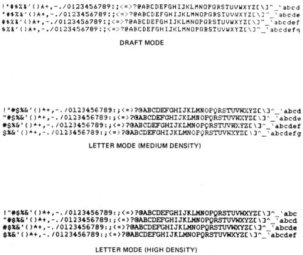

| Chapter 1 | Contents |
This chapter describes the terminal's response to received characters. The terminal processes characters according to American National Standards Institute (ANSI) standards X3.64-1979, X3.4-1977 and X3.41-1977. The ANSI system defines the American National Standard Code for Information Interchange (ASCII) chart shown in Figure 2-1. Figure 2-1 shows each character with its binary, octal, decimal, and hexadecimal values.
The terminal processes a received character based on the type of character as defined by ANSI. The position of the character in the ASCII chart determines the type of character as either a printable character or control character.
The ASCII chart is eight columns wide. The control characters are in columns zero and one. The rest of the chart contains printable characters (except for SP and DEL). The DEL (delete) character is always a control character. The SP can be considered either an information separator control character or a printable character.
A character sent from the computer to the terminal first goes through the application program, then through the terminal handler of the computer, then through the character processor of the terminal, then finally creates a terminal action.
To know exactly what action is caused by a character sent from your application program you have to make sure that all the following parts of the system are set properly:
To set the terminal, refer to this book and the Operator Guide; to set the terminal handler, refer to your operating system guide; to set the application program, refer to your application guide.
For example:
A form feed control character (octal 014) sent from the application program may not be executed by the terminal because the terminal is not set for form handling, or because the terminal handler is set to change form feed into multiple line feeds.
An escape control character (octal 033) may be changed into a dollar sign by the terminal handler or the application program.
A horizontal tab control character (octal 011) may be changed into spaces by the application program or the terminal handler, or may not be executed because no tab is set in the terminal.
Lower case characters may be changed into uppercase characters.
The following paragraphs describe both printable characters and control characters.
The terminal receives printable characters and stores the characters in a line buffer. The characters are printed when one of the following conditions occur:
If the active column is not greater than the right margin, each received character is printed and the active column is incremented. The actual character printed depends on the character code received, the font selected, and the character set selected.
A control character is a single character control function used to control terminal operation. Control characters are not printed. When the LA100 receives a control character the terminal responds by performing the action associated with the control character. The LA100 responds to the control characters listed in Table 2-1. Table 2-1 also lists each control character's mnemonic, and function. All other control characters received by the terminal cause no action.
NOTE: Each control function listed in this chapter has a mnemonic. The mnemonic is an abbreviation of the control function name.
| Name | Mnemonic | Octal Code | Function |
|---|---|---|---|
| Null | NUL | 000 | Used as fill characters (See Communication Chapter). |
| End of Transmission | EOT | 004 | Used as disconnect character if enabled. |
| Enquiry | ENQ | 005 | Request answerback message. |
| Bell | BEL | 007 | Sounds audible bell tone. |
| Backspace | BS | 010 | Moves the active column left one column. |
| Horizontal Tab | HT | 011 | Advances to next horizontal tab stop. |
| Line Feed | LF | 012 | Advances to next horizontal tab stop. |
| Vertical Tab | VT | 013 | Advances to next vertical tab stop. |
| Form Feed | FF | 014 | Advances to next top margin. |
| Carriage Return | CR | 015 | Returns to left margin. Performs line feed if enabled. |
| Shift Out | SO | 016 | Switches to G1 printer character set. |
| Shift In | SI | 017 | Switches to G0 printer character set. |
| Cancel | CAN | 030 | Immediately ends any control or escape sequence. |
| Substitute | SUB | 032 | Immediately ends any control or escape sequence. Characters received with errors are replaced by SUB if enabled. SUB is printed as " ". |
| Escape | ESC | 033 | Introduces an escape sequence. |
| Delete | DEL | 177 | No operation (not stored in the input buffer). |
Escape and control sequences are used to provide additional controls that are not provided by the control characters in the character set. These sequences are multiple character control functions that are not printed but are used to control the printing and processing of characters. Escape and control sequences are defined in ANSI standards X3.41-1977 and X3.64-1979. Refer to Appendix C for more detail on escape and control sequence processing.
NOTE: If an escape or control sequence is aborted in the middle of the sequence, it is not clear what action the following character will have. It is therefore recommended that any abort be followed by a cancel control character or a no action escape sequence ESC \ (octal 033 134).
For example: some operating systems echo CTL (control) C as ^ C. The sequence ESC CTL C then becomes ESC ^ C which puts the terminal is ANSI string processing mode. If this occurs the terminal discards printable characters (see ANSI string processing) if the host does not send the cancel control character. To recover from this mode, if the computer does not send the cancel control character; enter and exit SET-UP for the Letterwriter 100, enter and exit SELF TEST for the Letterprinter 100.
The following paragraphs describe in detail the escape and control sequences to which the LA100 responds. These sequences are described in the following order.
Line Feed New Line Mode -- defines the terminals' response to the line feed control character. When this mode is off and the terminal receives a line feed control character, the terminal increments the active line and advances the paper one line. When this mode is on, a received line feed control character causes the terminal to return the active column to the left margin in addition to its usual functions. Use the following sequences to enable or disable line feed new line mode.
NOTE: Carriage return line feed mode is operator selectable only. Refer to the Operator Guide for more detail.
| Name | Mnemonic | Sequence | Function |
|---|---|---|---|
| Line feed new line mode | LNM | ESC [ 2 0 h 033 133 062 060 150 |
Set line feed new line mode on. |
ESC [ 2 0 l 033 133 062 060 154 |
Set line feed new line mode off. |
Auto Wraparound Mode -- determines where the next character is printed when received while the active position is greater than the right margin. When this mode is off, any characters received while the active position is at the right margin are not printed. When this mode is on, any characters received while the active position is greater than the right margin are printed starting at the left margin on the next line. Use the following sequences to enable or disable auto wraparound mode.
| Name | Mnemonic | Sequence | Function |
|---|---|---|---|
| Auto wrap around mode | DECAWM | ESC [ ? 7 h 033 133 077 067 150 |
Set auto wraparound mode on. |
ESC [ ? 7 l 033 133 077 067 154 |
Set auto wraparound mode off. |
Quality Select Mode -- determines if received characters are printed in letter mode (medium or high density, depending on character ROM) or draft mode. See Figure 2-2 for examples.
The standard DPSs are designed to print in draft mode (7 × 9 character) or letter mode/high density (33 × 18 character). Some of the optional DPSs are designed to print in draft mode (7 × 9 character) or letter mode/medium density (33 × 9 character). Selecting letter mode selects either 33 × 18 or 33 × 9 characters, depending on the DPS selected.
NOTE: Medium and high density DPSs can both be resident in the terminal.
The terminal only responds to these sequences when the AUTO/MAN key is in the automatic (up) position. When the AUTO/MAN key is in the down position and the LTR/DRAFT key is used to select the print quality, any quality select sequence sent to the terminal is processed and stored. The sequences are performed when the AUTO/MAN key is set to the automatic (up) position.
Use the following sequences to change the quality select feature.
| Name | Mnemonic | Sequence | Function |
|---|---|---|---|
| Quality select | ESC [ 0 " z 033 133 060 042 172 |
Set quality select mode to default (draft mode). | |
| Quality select | ESC [ 1 " z 033 133 061 042 172 |
Set quality select mode to draft mode. | |
| Quality select | ESC [ 2 " z 033 133 062 042 172 |
Set quality select mode to letter mode (medium density). | |
| Quality select | ESC [ 3 " z 033 133 063 042 172 |
Set quality select mode to letter mode (high density). |
|  |
Pitch Select Mode -- selects font pitches or all pitches. When the terminal is set to all pitch the terminal can print any of the eight horizontal pitch selections available. This is useful when the terminal is used as a line printer (with draft density selected). When font pitch is selected, the terminal will print at the single width pitch of the current font (10 or 12 characters per inch) or its double width (5 or 6 characters per inch) only. This is useful when printing draft copies of future letter quality documents because the draft quality copy will look like the letter quality copy. Use the following sequences to select font pitch or all pitch.
| Name | Mnemonic | Sequence | Function |
|---|---|---|---|
| Pitch select mode | ESC [ ? 2 9 h 033 133 077 062 071 150 |
Set pitch select mode to font pitches. | |
| Pitch select mode | ESC [ ? 2 9 l 033 133 077 062 071 154 |
Set density select mode to all pitches. |
Printer Character Set Designation -- The character sets are usually language sets with some exceptions; the VT100 line drawing set, symbol, etc. The character sets that the terminal can actually print depends on the Dot Pattern Set (DPS) that the terminal is using and the character set selected. If the DPS currently used contains the character set selected, that character set is used. If the DPS currently used does not contain the character set selected, the default character set for that DPS is used. The standard DPSs contain the following character sets:
Four of these character sets can be preselected (designated). Two character sets are locking (remains active until next command), two are unlocking (remains active for one printable character only). The two locking character sets are designated by the computer as G0 and G1 using the select character set (SCS) sequence. Once the character sets are designated by the computer, a single control character is used to switch between the active character sets. The shift in (SI, octal 017) control character selects the G0 character set. The shift out (SO, octal 016) control character selects the G1 character set.
The designated character sets are used until another select character set (SCS) sequence is received. The G0 and G1 character sets can be redesignated by the computer using the select character set (SCS) sequence as often as needed.
The sequence used to designate the G0 character set is ESC ( (octal 033 050), followed by a valid final character. The sequence used to designate the G1 character set is ESC ) (octal 033 051), followed by a valid final character.
The two nonlocking character sets are designated G2 and G3 using the select character set (SCS) sequence. The G2 and G3 character sets are activated for only one character at a time. They are activated using the single shift 2 (ESC N) (octal 033 115) for G2 and single shift 3 (ESC O) (octal 033 116) for G3 sequences. The terminal returns to the previously used character set after the single character is printed.
The sequence used to designate the G2 character set is ESC * (octal 033 052), followed by a valid final character. The sequence used to designate the G3 character set is ESC + (octal 033 053), followed by a valid final character.
Table 2-2 lists the currently available character sets and their valid final characters.
| Character Set | Final Character |
|---|---|
| ISO United Kingdom | A 101 |
| USASCII | B 102 |
| DIGITAL Finnish | 5 065 |
| DIGITAL Norwegian/Danish | 6 066 |
| DIGITAL Swedish | 7 067 |
| ISO German | K 113 |
| DIGITAL French Canadian | 9 071 |
| ISO French | R 122 |
| DIGITAL VT100 line drawing set | 0 060 |
| ISO Italian | Y 131 |
| ISO Spanish | Z 132 |
Font Selection -- The LA100 can print characters in different fonts or styles. Changing a font changes the shape of the character but does not change the character itself. Digital currently provides the following fonts:
Additional fonts will be available in the future. The terminal can contain up to five fonts accessible at a given time. If the multiple font option is installed, the terminal only responds to these sequences when the option is set to computer select. When the operator forces a font from the multiple font option any font select sequences sent to the terminal are processed and stored. The sequences are performed when the option is set to computer select.
This sequence is also used to set or clear the underline attribute. This feature is used to underline characters. Use the following sequences to select a font or the underline attribute.
NOTE: If the selected font is not installed, the terminal selects the default (font 1).
| Name | Mnemonic | Sequence | Function |
|---|---|---|---|
| Font select | ESC [ 4 m 033 133 064 155 |
Select underline | |
| Font select | ESC [ 0 m 033 133 060 155 |
Clear underline | |
| Font select | ESC [ 1 0 m 033 133 061 060 155 |
Select Font 1 | |
| Font select | ESC [ 1 1 m 033 133 061 061 155 |
Select Font 2 | |
| Font select | ESC [ 1 2 m 033 133 061 062 155 |
Select Font 3 | |
| Font select | ESC [ 1 3 m 033 133 061 063 155 |
Select Font 4 | |
| Font select | ESC [ 1 4 m 033 133 061 064 155 |
Select Font 5 |
Request Font Configuration -- causes the terminal to send the font configuration report to the computer. Send the following sequence to the LA100 to request font configuration.
| Name | Mnemonic | Sequence | Function |
|---|---|---|---|
| Request Font Configuration | ESC [ ? 1 0 c 033 133 077 061 060 143 |
Causes LA100 to send font configuration report ESC [ ? Pn ; Pn SP D once for each installed font. |
NOTE: SP represents the space character (octal 040).
Report Font Configuration -- the terminal responds to the font configuration request with the sequence ESC [ ? Pn ; Pn SP D once for each installed font. The first parameter in the sequence is the font selection code. One selection code is available for each font.
| Font | Selection Code |
|---|---|
| Font 1 | 10 |
| Font 2 | 11 |
| Font 3 | 12 |
| Font 4 | 13 |
| Font 5 | 14 |
NOTE: Font selection code 10 is always present and sent last. It therefore indicates the end of the report.
The second parameter indicates the font type. The font type code indicates the following information.
Font Code Indicates: 1 - 64 2 density font 65 - 128 3 density font 129 - 200 custom font
If the font code is an odd number less than 127, the font contains the USASCII and United Kingdom character sets. If the font code is an even number less than 128, the font contains the following character sets:
At this time the currently assigned font codes are:
| Font Code | Font Type |
|---|---|
| 03 | Gothic 12, US and UK character sets |
| 07 | Courier 12, US and UK character sets |
| 11 | Symbol 10, US and UK character sets |
| 05 | Courier 10, US and UK character sets |
| 06 | Courier 10, standard overlay |
| 09 | Orator 10, US and UK character sets |
NOTE: Refer to the ROM Option Documentation for more codes.
Horizontal Pitch (Characters Per Inch) -- Horizontal pitch determines the width of printed characters as well as their spacing. The terminal has eight horizontal pitch selections (Figure 2-3). Any combinations of pitch may be used on a single print line.
NOTE: The actual horizontal pitch used by the terminal depends on the density select mode, pitch select mode and horizontal pitch features. Refer to all three features when attempting to select horizontal pitch.
Changing the horizontal pitch modifies the active column. The modified new active column is the first column boundary at or to the right of the physical position of the previous active column in the old pitch. New active column is calculated in the following way.
(Old column - 1) × New pitch
New column = 1 + -------------------------------
Old pitch
where New column = the new active column
New pitch = the new pitch in inches per character
Old column = the old active column
Old pitch = the old pitch in inches per character
The division performed above is an integer division. Any remainder or fractional part of the quotient is discarded.
Changing horizontal pitch also clears horizontal margins. The left margin is set to column one and the right margin is set to the maximum column for the selected pitch (Table 2-3).
The horizontal pitch default selection is 10 characters per inch (char/in). The following sequences are used to set horizontal pitch.
| Name | Mnemonic | Sequence | Function |
|---|---|---|---|
| Set horizontal pitch | DECSHORP | ESC [ 0 w 033 133 060 167 |
Set horizontal pitch to 10 char/in |
ESC [ 1 w 033 133 061 167 |
Set horizontal pitch to 10 char/in | ||
ESC [ 2 w 033 133 062 167 |
Set horizontal pitch to 12 char/in | ||
ESC [ 3 w 033 133 063 167 |
Set horizontal pitch to 13.2 char/in | ||
ESC [ 4 w 033 133 064 167 |
Set horizontal pitch to 16.5 char/in | ||
ESC [ 5 w 033 133 065 167 |
Set horizontal pitch to 5 char/in | ||
ESC [ 6 w 033 133 066 167 |
Set horizontal pitch to 6 char/in | ||
ESC [ 7 w 033 133 067 167 |
Set horizontal pitch to 6.6 char/in | ||
ESC [ 8 w 033 133 070 167 |
Set horizontal pitch to 8.25 char/in |
Horizontal Margins -- The left horizontal margin specifies the first printable column on a line; the right horizontal margin specifies the last printable column on a line. Printing is permitted only within the left and right margins inclusive (Figure 2-4).
The set horizontal margins sequence when accompanied by two parameters, sets the left and right margins. If both paramters are not zero, and the first is the smaller of the two, the left margin is set to the first specified parameter and the right margin is set to the second. The carriage is then repositioned to the new left margin.
NOTE: Changing the horizontal pitch modifies the horizontal margins. The left margin is set to column one and the right margin is set to the maximum right margin in the selected horizontal pitch (Table 2-3).
The sequence is ignored if the first parameter is greater than the second parameter. The sequence is also ignored if one of the specified parameters would set the right margin further right than 13.2 inches.
If the first parameter in the sequence is omitted, the remaining parameter sets the right margin to the specified value. If an attempt is made to set the right margin to the left of the left margin, the sequence is ignored.
If the second parameter in the sequence is omitted, the first parameter sets the left margin to the specified value. If an attempt is made to set the left margin to the right of the right margin, the sequence is ignored. If the active column is less than the new left margin, it is set to the new left margin and the carriage is repositioned.
If both parameters are zero or omitted, the margins are unchanged. The default setting for the left margin is column one. The default setting for the right margin is column 132.
The following sequence is used to set the left and right margins.
| Name | Mnemonic | Sequence | Function |
|---|---|---|---|
| Set left and right margins | DECSLRM | ESC [ Pn ; Pn s 033 133 *** 073 *** 163 |
Set left and right margins to the values given |
NOTE: The *** character is used to indicate variable numeric parameters within the octal representation of the control or escape sequence.
| Horizontal Pitch | Maximum Column |
|---|---|
| 10 | 132 |
| 12 | 158 |
| 13.2 | 168 |
| 16.5 | 216 |
| 5 | 66 |
| 6 | 79 |
| 6.6 | 84 |
| 8.25 | 108 |
Horizontal Tabs -- A horizontal tab is a preselected point on a line to which the print head advances when a horizontal tab control character is received (Figure 2-4). The LA100 has 217 possible horizontal tab stops, one for each column. Tab stops are associated with column numbers, not physical positions on the paper. Therefore, changing horizontal pitch also changes the physical position of tab stops. Each stop may be set or cleared independently. Setting a stop already set has no effect; the same is true for clearing a stop already cleared. Tab stops may be set or cleared regardless of margins or horizontal pitch. The default settings for horizontal tabs are one every nine columns.
The following sequences are used to set or clear horizontal tab stops.
| Name | Mnemonic | Sequence | Function |
|---|---|---|---|
| Horizontal tabulation set | HTS | ESC H 033 110 |
Set horizontal tab stop at active column |
| Horizontal tabulation set | DECHTS | ESC 1 033 061 |
Set horizontal tab stop at active column |
| Tabulation clear | TBC | ESC [ 0 g 033 133 060 147 |
Clear horizontal tab at active column |
| Tabulation clear | TBC | ESC [ 2 g 033 133 062 147 |
Clear all horizontal tab stops |
| Tabulation clear | TBC | ESC [ 3 g 033 133 063 147 |
Clear all horizontal tab stops |
| Clear all horizontal tabs | DECCAHT | ESC 2 033 062 |
Clear all horizontal tab stops |
NOTE: The *** character is used to indicate variable numeric parameters within the octal representation of the control or escape sequence.
| Name | Mnemonic | Sequence | Function |
|---|---|---|---|
| Set horizontal tabs | DECSHTS | ESC [ Pn ; ... Pn u 033 133 *** 073 ... *** 165 |
Set horizontal tab stops at the given values |
*Vertical Pitch -- Vertical pitch determines the spacing between lines, not the height of printed characters (Figure 2-5). The LA100 has six vertical pitch selections. Changing vertical pitch changes:
* Note that the vertical pitch feature is different from previous DIGITAL terminals.
Changing vertical pitch does not affect:
The vertical pitch default selection is six lines per inch. The following sequences are used to set vertical pitch.
| Name | Mnemonic | Sequence | Function |
|---|---|---|---|
| Set vertical pitch | DECVERP | ESC [ 0 z 033 133 060 172 |
Set vertical pitch to six lines per inch |
ESC [ 1 z 033 133 061 172 |
Set vertical pitch to six lines per inch | ||
ESC [ 2 z 033 133 062 172 |
Set vertical pitch to eight lines per inch | ||
ESC [ 3 z 033 133 063 172 |
Set vertical pitch to twelve lines per inch | ||
ESC [ 4 z 033 133 064 172 |
Set vertical pitch to two lines per inch | ||
ESC [ 5 z 033 133 065 172 |
Set vertical pitch to three lines per inch | ||
ESC [ 6 z 033 133 066 172 |
Set vertical pitch to four lines per inch |
*Form Length -- The LA100 can operate in one of two modes: form mode or no form mode (roll paper). In the no form mode, there is no form length or vertical margins, printing occurs continuously, lines being spaced apart according to the current pitch.
* Note that the form length feature is different from previous DIGITAL terminals.
When in form mode, the terminal will not print above the top margin or below the bottom margins, and lines will be spaced so that the distance between active line and top margin is always a multiple of the current pitch. (Figure 2-6).
When a form length of zero is defined for the terminal, the LA100 assumes that roll paper is being used and enters the no form mode. When a non zero form length is given, the terminal assumes that form paper is being used, and enters the form mode.
The form length is measured in lines 1/24 of an inch. The form length can be no longer than 21 inches. To set form length, first try to ensure that the terminal is at the top of form.
NOTE: Remember that a form feed puts the active line at the top margin, not the top of form. To advance to the top of form the top margin must be cleared.
Measure the form length in inches. Ensure that you know the current vertical pitch of the terminal and that the new form length is a multiple of this pitch. If the current pitch is unknown or the form length is not a multiple of the vertical pitch, set a new vertical pitch.
NOTE: Most form lengths are a multiple of 1/12, and all allowed form lengths are either a multiple of 1/12 or 1/8.
Then, send the form length command with the parameter equal to the form length multiplied by the current vertical pitch.
The default form length selection is 11 inches. The following sequence sets form length.
| Name | Mnemonic | Sequence | Function |
|---|---|---|---|
| Set lines per physical page | DECSLPP | ESC [ Pn t 033 133 *** 164 |
Set form length to n × pitch in inches, set top margin to 0 inches, active line to line one, set top of form to current position, and set bottom margin to form length. |
Vertical Margins -- The top vertical margin specifies the first printable line; the bottom vertical margin specifies the limit for the last printable line (Figure 2-6). Printing is allowed only on the lines between the top and bottom margins (including the top margin). The bottom margin may not be included depending on the vertical pitch.
To set the top and bottom margins, first be sure that the distance between the top of form and the desired margin is a multiple of the vertical pitch selected. Otherwise, change the pitch and then send the set margin command with a parameter equal to the desired margin in inches multiplied by the current vertical pitch in lines per inch.
Attempting to print above the top margin or below the bottom margin automatically advances the active line to the top margin of the next page. For example, a line feed (LF) received at the bottom margin causes the terminal to perform a line feed.
The set vertical margins sequence, accompanied by two parameters, sets the top and bottom margins. If both parameters are not zero and the first is the smaller of the two, the top margin is set to the first parameter and the bottom is set to the second. Then the paper may be repositioned to the new top margin depending on the current line position and terminal activity.
The sequence is ignored if the first parameter is greater than or equal to the second parameter. The sequence is also ignored if one of the specified parameters would set the bottom margin past the assigned form length.
If the first parameter in the sequence is omitted, the remaining parameter sets the bottom margin to the specified line. If an attempt is made to set the bottom margin above the top margin, the sequence is ignored.
If the second parameter in the sequence is omitted, the first parameter sets the top margin to the specified line. If an attempt is made to set the top margin below the bottom margin, the sequence is ignored. If the active line is less than the top margin, it is set to the new top margin and the paper is repositioned.
If both parameters are set to zero or omitted the margins are unchanged. The default top margin selection is top of form. The default selection for the bottom margin is 11 inches.
The following sequences set the top and bottom margins.
| Name | Mnemonic | Sequence | Function |
|---|---|---|---|
| Set top, bottom margins | DECSTBM | ESC [ Pn ; Pn r 033 133 *** 073 *** 162 |
Set top margin to line Pn and bottom margin to line Pn. |
NOTE: The *** character is used to indicate variable numeric parameters within the octal representation of the control or escape sequence.
Vertical Tabs -- A vertical tab is a preselected line to which the print head advances when a vertical tab control character is received (Figure 2-7). The terminal has 168 vertical tab positions. Vertical tabs may be set and cleared like horizontal tabs. Vertical tab stops are associated with specific line numbers, not physical positions on the paper. Therefore, changing vertical pitch changes the printing position of vertical tabs on the paper. The default settings for vertical tabs are one every line. The following sequences set or clear vertical tab stops.
NOTE: 21 inches at 12 lines per inch = 252 lines. Only the first 168 lines can have vertical tab stops.
| Name | Mnemonic | Sequence | Function |
|---|---|---|---|
| Vertical tab set | VTS | ESC J 033 112 |
Set vertical tab stop at active line |
| Vertical tab set | DECVTS | ESC 3 033 063 |
Same |
NOTE: The *** character is used to indicate variable numeric parameters within the octal representation of the control or escape sequence.
| Name | Mnemonic | Sequence | Function |
|---|---|---|---|
| Set vertical tab stops | DECSVTS | ESC [ Pn ; ... Pn v 033 133 *** 073 *** 166 |
Set vertical tab stops at lines given |
| Tabulation clear | TBC | ESC [ 1 g 033 133 061 147 |
Clear vertical tab stop at active line |
| Tabulation clear | TBC | ESC [ 4 g 033 133 064 147 |
Clear all vertical tab stops |
| Clear all vertical tabs | DECCAVT | ESC 4 033 064 |
Same |
Active Column and Active Line -- Active column is the column where the next character will be printed. Active line is the line where the next character is printed. Column and line numbers begin with one, not zero. Printable characters usually increment the active column. Line feeds, vertical tabs, and form feeds increment the active line.
The active column and active line are collectively known as active position. Active position is only loosely linked to the physical position of the carriage and paper mechanism.
When auto last character view is selected, the terminal carriage moves 0.4 inches to the right whenever printing stops for more than one second. This action allows the last character printed to be viewed. However active column is not affected by this feature. Bell characters do not have an active position attribute. They are not guaranteed to be sounded at any particular position.
In addition to the control characters (backspace, horizontal tab, carriage return, line feed, vertical tab, and form feed) the following escape sequences modify active column and active line.
| Name | Mnemonic | Sequence | Function |
|---|---|---|---|
| Index | IND | ESC D 033 104 |
Increment active line and advance paper -- line feed new line mode has no effect on this feature |
NOTE: The *** character is used to indicate variable numeric parameters within the octal representation of the control or escape sequence. |
|||
| Vertical position absolute | VPA | ESC [ Pn d 033 133 *** 144 |
Set active line to Pn -- if Pn is less than or equal to active line, or is greater than bottom margin, active line is set to top margin on next page |
| Next line | NEL | ESC E 033 105 |
Set active column to left margin and increment active line |
| Horizontal position absolute | HPA | ESC [ Pn ` 033 133 *** 140 |
Set active column to column Pn -- if Pn is greater than right margin, active column is set to left margin on next line -- if Pn is less than or equal to left margin, active column is set to left margin |
| Horizontal position relative | HPR | ESC [ Pn a 033 133 *** 141 |
Advance current active column by Pn columns -- if active column exceeds right margin, active column is set to left margin on next line regardless of actual value of Pn -- if Pn = 0, then no motion occurs |
| Cursor up | CUU | ESC [ Pn A 033 133 *** 101 |
Decrement current active line by Pn lines without going past top margin -- if Pn is greater than or equal to current active line, sequence is ignored |
| Vertical position relative | VPR | ESC [ Pn e 033 133 *** 145 |
Advance active line by Pn lines -- if Pn = 0, 256 lines is assumed, if parameter exceeds bottom margin, active line is set to top margin on next page regardless of actual value of Pn |
NOTE: The PLD sequence does not modify active line. To avoid losing the top of form reference send an equal number of PLU sequences to the terminal. |
|||
| Partial line down | PLD | ESC K 033 113 |
Index paper up 0.212 cm (1/12 inch) -- line feed new line mode has no effect on this sequence |
NOTE: The PLU sequence does not modify active line. To avoid losing the top of form reference, send an equal number of PLD sequences to the terminal. |
|||
| Partial line up | PLU | ESC L 033 114 |
Index paper down 0.212 cm (1/12 inch) -- line feed new line mode has no effect on this sequence |
| Reverse index | RI | ESC M 033 115 |
Decrement active line and move paper down one line -- line feed new line mode has no effect on this sequence |
Product Identification -- The LA100 automatically transmits an answer to the ANSI standard request for device attributes. The following sequences cause the terminal to transmit its product identification sequence.
| Name | Mnemonic | Sequence | Function |
|---|---|---|---|
* This sequence is provided for compatibility with previous products. It may not be supported in future products and is therefore not recommended. |
|||
| Device attributes | DA | ESC [ c 033 133 143 |
Transmits ESC [ ? 1 0 c which forms the product identification of the basic LA100. |
| Device attributes | DA | ESC [ 0 c 033 133 060 143 |
Same |
| *Identify terminal | DECID | ESC Z 033 132 |
Same |
When the terminal receives any of the escape sequences listed below, it responds as usual to control characters received (octal 000 -- 037 and 177) and discards any printable characters received (octal 040 -- 176). The terminal reverts to text processing mode when one of the following conditions occur.
| Name | Mnemonic | Sequence |
|---|---|---|
| Application program command | APC | ESC _ 033 137 |
| Operating system command | OSC | ESC ] 033 135 |
| Privacy message | PM | ESC ^ 033 137 |
| Device control | DCS | ESC P 033 120 |
NOTE: The LA100 remains in DCS mode until it recognizes a valid protocol selector, or the terminal receives the terminator sequence ESC \. For more detail on DCS mode refer to the Graphics Mode and Answerback Message sections in this chapter.
While in text mode, characters are printed as they are received. In graphics mode, characters received define specific columns of dots to be printed. Graphics mode allows users to print dot combinations anywhere on a page. This mode can be used to draw pictures and plot graphs (Figure 2-8).
After entering graphics mode, the vertical pitch, horizontal pitch, and horizontal margins change. The graphics mode pitch and margins section describes these changes.
DIGITAL does not recommend using single sheet or tractor feed paper when operating in graphics mode.
The terminal has a horizontal resolution of 132 columns per inch with a 50 percent overlap, and a vertical resolution of 72 dots per inch with no overlap between dots. There is a 44 percent dot overlap between lines. The aspect ratio (ratio of horizontal to vertical resolution) is 1.83.
The format for a string of graphics data is as follows.
| DCS introducer | ESC P |
| Protocol selector | Pn q |
| Data | Control characters or column definitions |
| DCS terminator | ESC \ |
When the terminal receives the DCS introducer, it enters DCS mode and waits for the correct protocol selector. The DCS introducer is the ANSI DCS introducer sequence ESC P (033 120).
When the protocol selector is received the terminal begins to process data as described in the data section.
The terminal remains in DCS mode if the proper protocol selector is not received, or if the terminal receives a character that is out of range before the correct protocol selector is recognized.
After receiving the DCS introducer, the protocol selector causes the terminal to enter graphics mode. The protocol selector for the terminal consists of a numeric parameter and a final character. The correct protocol selector is 1 (octal 061) and q (octal 161). Valid protocol selectors include:
0 selects default graphics protocol (same as 1 for LA100)
1 selects DECwriter IV protocol (described in this section)
2 - 255 reserved for future development.
The data contained within a graphics string can either be control characters or printable data. The following paragraphs describe the control characters to which the terminal responds in graphics mode, and the format of the printable characters received.
In graphics mode, the terminal responds to the following control characters.
| Name | Mnemonic | Octal Code | Function |
|---|---|---|---|
NOTE: NUL, EOT, ENQ, BEL, DEL, SI, and SO are processed as in text mode (refer to Table 2-1). BS, LF, CR, FF, HT, and VT are ignored in graphics. |
|||
| Cancel | CAN | 030 | Immediately causes an exit graphics. |
| Substitute | SUB | 032 | Replaces any character received with errors. When received in graphics, SUB is processed as a one column space. |
| Escape | ESC | 033 | Causes the terminal to exit graphics and process the sequence. |
| Name | Mnemonic | Octal Code | ASCII Character | Function |
|---|---|---|---|---|
| Graphics Repeat Introducer | DECGRI | 041 | ! | Begin repeat sequence |
| Graphics Carriage Return | DECGCR | 044 | $ | Returns to graphics left margin |
| Graphics New Line | DECGNL | 055 | - | Returns to graphics left margin and advances to next graphics line |
After the proper protocol selector is received, any character received in the 077 -- 176 octal range is considered printable data. These characters define a column of six dots to be printed. This allows selective firing of the top six printhead wires (Figure 2-9). The seventh, eighth and ninth printhead wires are not used in graphics mode.
Printable characters are processed in the following way. The offset (octal 077) is substituted from the binary value of the character received. The result is a six dot column definition. A printhead wire is fired, and a dot printed, if the corresponding bit is set to one.
The least significant bit is associated with the top printhead wire (wire one). The sixth bit is associated with the sixth printhead wire, and is the last wire that can be fired in graphics mode.
| Wire | Bit | |
|---|---|---|
| Top | 1 | 1 |
| 2 | 2 | |
| 3 | 3 | |
| 4 | 4 | |
| 5 | 5 | |
| 6 | 6 | |
| 7 Not Used | ||
| 8 Not Used | ||
| Bottom | 9 Not Used |
Refer to Table 2-6 for several printable character examples.
| Character | Octal Value | Binary Value (minus Offset) |
Wires Fired |
|---|---|---|---|
| ? | 077 | 00000000 | o o o o o o |
| @ | 100 | 00000001 | * o o o o o |
| ~ | 176 | 00111111 | * * * * * * |
| _ | 137 | 00100000 | o o o o o * |
A repeat sequence allows the terminal to continually print a dot column for a specified number of times. It has the same effect as receiving the dot column that many times. A repeat sequence is defined as follows.
| Repeat introducer | ! (octal 041) |
| Numeric parameter | Number of times to print the dot column (characters in the octal range of 060 - 071) |
| Dot column | Character in the 077 -- 176 octal range |
The repeat sequence introducer is the private control character ! (octal 041).
The numeric parameter specifies the number of times to print the column definition that follows. The numeric parameter is a string of characters in the 060 -- 071 octal range. If a numeric parameter is not specified, a value of zero is assumed for the numeric parameter. If the value specified is larger than the graphic printer limit for numeric parameters (64 K), the limit is assumed. All decimal digits are processed as part of the count.
The dot column (a character in the 077 -- 176 octal range) is printed as many times as specified by the numeric parameter count. All control characters received during a repeat sequence are processed as usual. For example, the control character ! resets the repeat sequence count.
All unspecified characters (octal 072 -- 076) are ignored.
The DCS terminator ESC \ (octal 033 134) causes the terminal to exit graphics mode and revert to text mode character processing. The CAN (cancel) or ESC (escape) control characters also cause the terminal to exit graphics mode. If the ESC control character is received, the terminal exits graphics mode and starts processing the escape sequence.
After an exit graphics, the terminal is set to the following:
In graphic mode the horizontal pitch is set to 132 columns per inch (9.5 characters per inch). The vertical pitch is set to 1/12 lines per inch.
Graphics mode maximum line length depends on the horizontal pitch and the margins selected in text mode. In graphics mode, the maximum line length is 13.1 inches (1,736 dots). To use the maximum line length, the following conditions must be met before entering graphics mode.
After entering graphics mode the left margin is repositioned to the right 0.11 inches maximum of the last printed column in text mode. Graphics mode left margin is calculated as follows:
(Current Active Column - 1) × Old Pitch
Left Margin = -----------------------------------------
70
If there is a remainder, round up to the next whole number.
After entering graphics mode the right margin is repositioned to the left of the text mode right margin (0.11 inches maximum). The graphics mode right margin is calculated as follows:
Old Right Margin × Old Pitch
Right Margin = ------------------------------
70
Discard any remainder.
If an attempt is made to print past the right margin, the terminal responds according to the auto wraparound mode selection.
Superscript or subscript can be used to label graphic data with text mode comments. Reverse line feed is not recommended because the graphics mode vertical pitch may not be the same as the text mode vertical pitch.
Answerback is a message up to thirty characters that identifies the terminal for the computer. This message is transmitted upon request from the computer, the keyboard (Letterwriter 100 only), or automatically if enabled (refer to the auto answerback feature in the Operator Guide).
Both printable characters and control characters can be part of the answerback message. To allow down line entry of both printable and control characters, the message is hexadecimal encoded.
The format for an answerback message is:
| DCS introducer | ESC P |
| Protocol selector | Pn v |
| Data | Encoded Answerback Message Text |
| DCS terminator | ESC \ |
When the terminal receives the DCS introducer, it enters DCS mode and waits for the corrent protocol selector. The DCS introducer is the ANSI DCS introducer sequence ESC P (octal 033 120).
The protocol selector is followed by the text of the answerback message encoded in hexadecimal format. The terminal remains in DCS mode if the proper protocol selector is not received, or if the terminal receives a character that is out of range before the correct protocol selector is recognized.
After receiving the DCS introducer, the protocol selector causes the terminal to enter answerback message entry mode. The protocol selector for answerback message entry consists of a numeric parameter and a final character. The correct protocol is 1 (octal 061) and v (octal 166).
NOTE: When the protocol selector is recognized the message stored in operating memory is erased. However the message stored in user permanent memory remains the same until the next store is performed.
After the proper protocol selector is received, control characters (0 -- 037 and 177 octal range) are executed as usual.
Hexadecimal digits (character in the 060 -- 071, 101 -- 106, 141 -- 146 octal range) are grouped in pairs to give the hexadecimal equivalent of the character to be entered in the answerback message. Any character from 0 -- 177 (octal) can be entered in the answerback message using the hex encoding system (see example).
When the protocol selector is recognized the message stored in operating memory is erased. Then a character is added to the message every time a pair of hexadecimal digits has been received.
NOTE: The message is not made 30 characters long automatically. If padding NUL control characters are needed, they must be included in the message.
Example:
The following string will down line the message: LA100
DCS introducer
| Protocol selector DCS terminator
| | Hex encoded message |
|---| |---| |-----------------------------------| |---|
ESC P 1 v 4 C 4 1 3 1 3 0 3 0 ESC \
033 120 061 166 064 103 064 061 063 061 063 060 063 060 033 134
|-------------------------------------------------------------|
Octal Equivalent